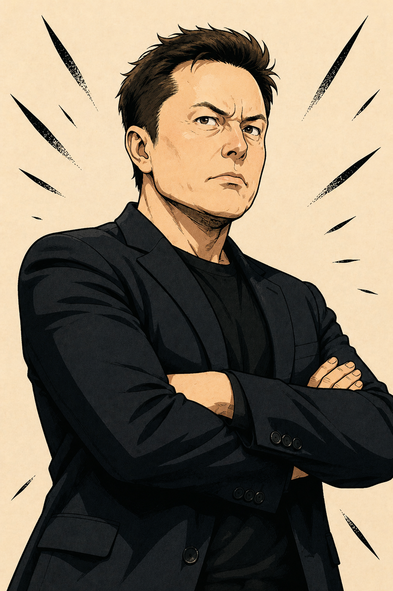
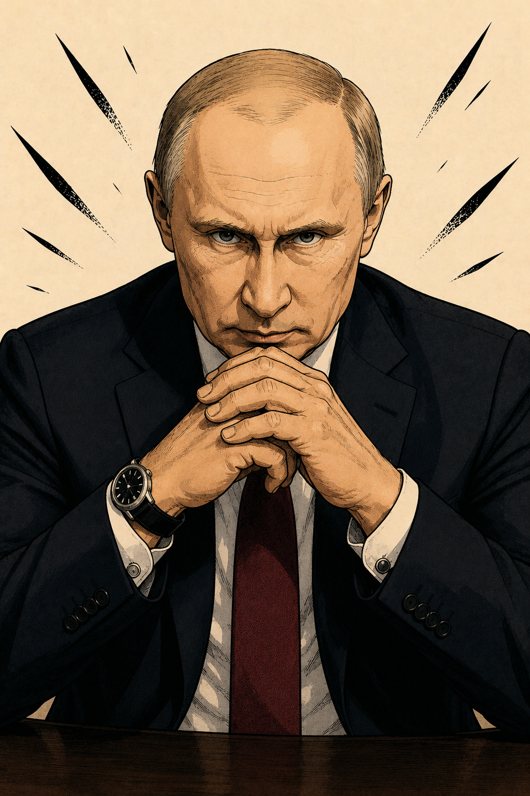
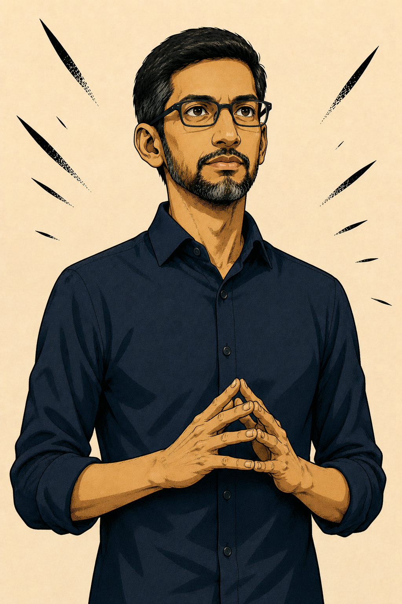
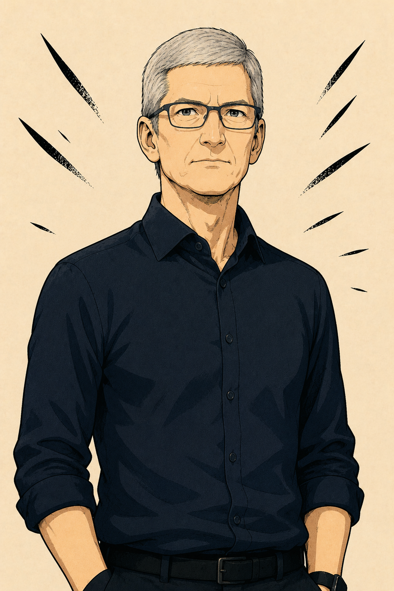
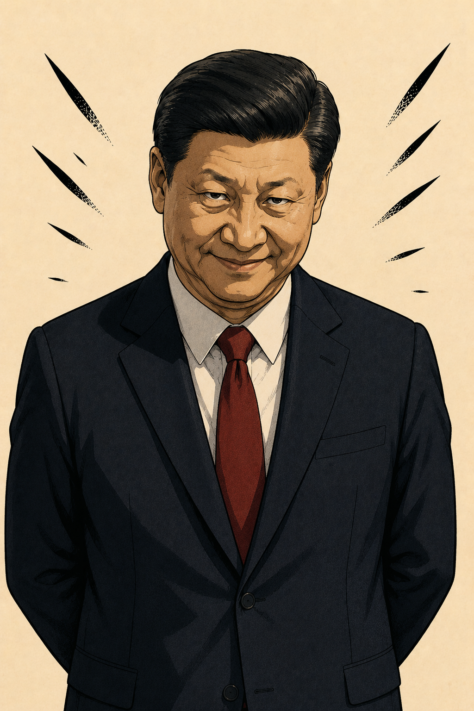

Cieasmo Prix
The ISS wreck crashes into the White House, throwing the world into terror. Global leaders and tech CEOs rush in to interfere, while the Squad emerges from the debris and instantly goes viral across media. Amid the chaos, Santa appears mid‑clash, driving tensions higher. Drama peaks as factions form and the stage is set for a showdown that will decide the balance of power.
Characters in the series:
Donald

Resident - Whitehouse
Natalie

Assistant
Elon

SpaceX
Vladimir

Russia
Sundar

Google
Tim

Apple
Xi

China
Chapters
Cp 1 - Whitehouse wreck
The ISS wreckage came crashing down toward Washington, D.C. 🛰️💨 Donald: What?! 😳 Natalie: Sir?! Get down! 😰 A loud noise was heard. Windows shattering, earth shaking. A massive part of the ISS crashed into the White House grounds. Smoke and debris flew everywhere. 🚨💨 Donald: WE'RE UNDER ATTACK!!! 😱 Natalie: Sir, relax… Donald: Aaaah! I’m dead! I’m dead… Natalie: Sir, we’re safe… calm down… It might be some unavoidable crash. Donald: My evil enemies! Natalie: Or maybe an accident? Donald: Who else would crash into the White House?! 😡 Natalie: Maybe... it fell? 🤨 Donald: That's worse! 😭 They rushed outside to inspect the wreckage. Donald looked around at the destroyed spacecraft pieces. Donald: What is this?! Natalie: Looks like space station debris. 🛰️ Donald suddenly spotted a logo on one of the broken pieces. Donald: Wait... Natalie: What? Donald: SPACEX?! 😡 Natalie: SpaceX, yes. Donald: ELON HAS BEEN PLAYING IN SECRET AGAINST ME! 😤 Natalie: Sir, that's quite an accusation. Donald: Look at the evidence! SpaceX logo! White House! CRASH! 🤨 Natalie: Those are three things, not evidence. 😭 Donald: Natalie, don't defend him! He might be trying to take my seat! Natalie: I'm defending logic. 😐 Suddenly figures moved underneath the wreckage. Natalie: Uh... sir? Donald: What now?! 😨 A piece of metal shifted.Then another. Someone was trapped underneath. Donald: Who's in there? The wreckage began to move. Natalie: Looks like we're about to find out... 👀 The Squad slowly emerged from the debris. Donald: WHAT?! 😳 Monica: Uh... hi? 😐 Charlie: Bro…. Am I alive? 💀 Ben: I think we crashed. Paraoh: Great observation. 😂 Diamonde: Guys... that's the White House. 😭 The Squad stared at the destruction around them. Donald stared back. The world had just witnessed the biggest crash in history. 🌎🛰️💥 And the Squad had landed right in the middle of it.
Cp 2 - Viral Chaos
The White House was surrounded by reporters. 📺🎤 News helicopters flew above the wreckage while cameras pointed toward the Squad. 🚁📸 Reporter: Breaking news! The White House has been hit by ISS wreckage! 🛰️💥 Reporter 2: And wait... survivors are coming out of the debris! 😳 Charlie: Bro, why are there so many cameras? 💀 Paraoh: We're famous! 😎📸 Ben: I don't think that's a good thing. 😭 Diamonde: Too late. Look at that screen! 👀 A giant news channel showed the Squad's faces. NEWS HEADLINE: “WHO ARE THE FIVE PEOPLE WHO FELL FROM SPACE?!” Monica: FIVE PEOPLE?! 😭 Charlie: Bro forgot to count properly. 😂 Ben: There's five of us. Paraoh: Maybe Apple counts as a person. 🍎🤖 Apple: I appreciate the recognition. 🤖 Meanwhile, Donald watched the broadcasts from the White House. Donald: They're already famous?! 😡 Natalie: Sir, they're literally survivors of an ISS crash. Donald: Then why are people making memes?! 😭 A phone screen showed a meme of Charlie crawling out of the wreckage. Charlie: WHO MADE THAT?! 💀 Paraoh: Bro, you're viral. 😂🔥 Another video appeared. “SPACE SQUAD CRASHES INTO WHITE HOUSE 💀” Monica: This is getting out of control. Suddenly, another headline appeared across every screen. “WHERE DID THIS SQUAD COME FROM?” The internet exploded. 🌎📱🔥 And somewhere far away, someone was watching the chaos very closely. 👀 The answer would soon become much more dangerous.
Cp 3 - Fraction Formation
The news was still exploding across the world. 📺🌎 Donald stood outside the White House, staring at the wreckage. Donald: This is SpaceX equipment! 😡 Elon did this secretly! Natalie: Sir, we don't actually know that. 😐 Donald: Call Elon! 😤 A few minutes later, Elon arrived at the White House. 🚗💨 Elon: Why am I being accused of crashing the ISS into the White House? 😭 Donald: Your company. Your logo. Your spacecraft. Explain! 😡 Elon: First of all, I didn't order anyone to crash anything. Secondly, that wasn't even supposed to happen! 😑 Natalie: See? Maybe we should investigate before blaming him. Elon: Further, ISS isn't owned by me. The only thing sent to space from our side was the Crew Dragon 2... And I'm still unaware who, why and how did that! Donald: Hmm... 🤨 Elon looked toward the Squad. Elon: They were on that mission, weren't they? Monica: Yeah. And we'd also like to know why we were sent up there in the first place. 👀 Elon: Then we're on the same side. I want answers too. Where's Yuri! Donald: So you're siding with them?! Elon: If they're innocent, yes. Charlie: Bro just joined our team because you accused him. 💀 Paraoh: Best recruitment ever. 😂 Meanwhile, the internet was spreading thousands of theories. Sundar was watching the chaos from Google HQ. 📱 Sundar: These conspiracy theories are spreading ridiculously fast. Employee: People are even claiming Google caused the crash. 😭 Sundar: What?! No. 😐 He looked at the footage of the Squad. Sundar: We need to know what actually happened. They've disrupted the internet! Back at the White House, Donald contacted Vladimir and Xi to discuss the situation. Vladimir: So you believe Elon is responsible? Donald: I'm not completely sure anymore. 😤 Xi: Then we need more information. Natalie: Finally, someone said it. 😭 Suddenly, another figure appeared on the news. Tim: I've been watching this situation. Everyone turned toward the screen. Tim: And that AI device with the Squad... that's Apple technology. Apple: Confirmed. 🤖🍎 Tim: Then I want answers too. Why was it sent to space? Ben: So... are you joining us? Tim: Looks like it. 😐 Charlie: Bro, this team is getting expensive. 💀 The sides were slowly forming—not because anyone planned it, but because everyone wanted answers. And somewhere in the chaos... Someone was watching them. Santa. 👀
Cp 4 - Sparks of War
The White House lawn was still covered in ISS wreckage. 🛰️🏛️💨 News reporters surrounded the area, while supporters of both sides gathered behind the barricades. 📺📢 Donald: Everyone stay back! This is a national security situation! 😡 Elon: National security? You accused me of crashing a space station into your house! 😐 Donald: Because your logo was on it! 😤 Natalie: Sir, we've already established that isn't enough evidence. 😭 Elon: Thank you, Natalie. Finally, someone with common sense. 😂 Donald: Don't team up against me! Charlie: Bro, this is already becoming a family argument. 💀 Suddenly, protesters began shouting from both sides. Crowd: SQUAD! SQUAD! SQUAD! 📢🔥 Another crowd: DONALD! DONALD! DONALD! 😡 Paraoh: Why are people chanting like we're in a football match? 😂 Diamonde: Because apparently this is politics now. 😭 Vladimir stepped forward. Vladimir: Enough. The Squad must answer for what happened. Monica: We were literally inside the wreckage! 😐 Xi: That does not explain everything. Ben: We don't even know everything ourselves! 😭 Sundar: Then perhaps everyone should stop fighting and investigate. We have the biggest database! Tim: Agreed. Donald: Nobody is fighting! A bottle flew past him. 🍾💨 Donald: ...Okay, maybe a little. 😐 Suddenly, the barricade broke. People rushed forward. 🚨 Charlie: OH NO. Elon: Everyone move! The Squad pulled back as security rushed between the crowds. Apple: Warning. Conflict escalation detected. 🤖⚠️ Paraoh: Bro, even Apple is telling us we're cooked. 💀 Monica: Stay together! The two groups pushed against each other as the situation spiraled. The crowds clashed terribly, the security getting crushed between them. And somewhere beyond the crowd, Santa watched silently. 👀 Santa: Let them fight. The sparks had finally become a fire. 🔥🌎
Cp 5 - The First Showdown
COMING...
Cp 6 - Viral Aftermath
COMING...
Cp 7 - Betrayals
COMING...